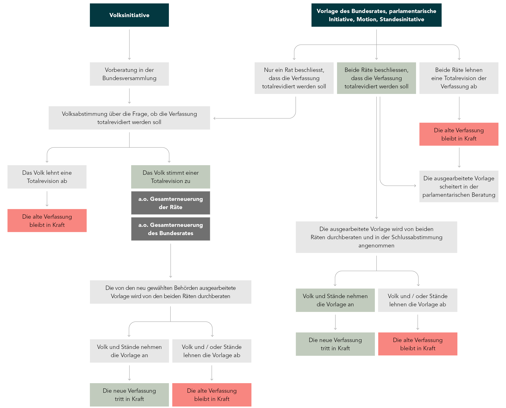

Eine der Hauptaufgaben der Legislative ist die Gesetzgebung. Zusammen
entscheiden die insgesamt 246 demokratisch gewählten Mitglieder der
Bundesversammlung über Gesetzesänderungen auf nationaler Ebene.
Dies gilt ebenfalls für Änderungen der Bundesverfassung, wobei die
Kontrolle darüber stärker ist, weil ein doppeltes Mehr (Mehrheit im Volk
und der Kantone) zwingend notwendig ist.
- Rechtsetzung
- Komissionen
- Legislaturplannungskommissionen LPK
- Geschäftsprüfungskommissionen GPK
- Finanzen
- Voranschlag
- Nachtragskredite
- Ordentliches Verfahren
- Dringliches Verfahren
- Wahl der Bundesorgane
- Bundesratswahlen
- Oberaufsicht
- Mitwirken in der Aussenpolitik
- Ordentliches Verfahren
- Vereinfachtes Verfahren
- Gewährleistung der Verfassungen
Komissionen
Das Parlament besitzt auch Komissionen, welche aus einigen Ratsmitgliedern bestehen. Hauptsächlich beraten sie und arbeiten Vorschläge für das Parlament aus. In diesem Kapitel werden einige davon exemplarisch beleuchtet.
Legislaturplannungskommissionen LPK
Die LPK bestehen aus 22 Mitgliedern des Nationalrates und 11 Mitgliedern des Ständerates (Stand 2025). Sie gehören zu den Spezialkommissionen und ihre Aufgabe besteht darin, den Entwurf des Bundesrates zur Legislaturplanung vorzuberaten. Dieser Entwurf wird zu Beginn jeder Legislaturperiode, also nach jeder Gesamterneuerungswahl der Räte, der Bundesversammlung vorgelegt. Er definiert politische Ziele und plant Erlasse der Bundesversammlung zur entsprechenden Umsetzung.
Geschäftsprüfungskommissionen GPK
Die GPK bestehen aus 24 Mitgliedern des Nationalrates und 13 Mitgliedern des STänderates (Stand 2025). Sie gehören zu den Aufsichtskomissionen und überprüfen die Geschäftsführung des Bundesrates und der Bundesverwaltung.
Finanzen
Die Bundesversammlung entscheidet nicht nur über Gesetze, sondern auch über die Finanzen des Bundes. Dies umfasst hauptsächlich den Voranschlag sowie etwaige Nachtragskredite.
Voranschlag
Das Parlament nimmt einen Vorschlag des Bundesrates entgegen und ist befugt, Änderungen zu erlassen. Der Voranschlag zeigt für das kommende Jahr und die drei darauffolgenden Jahre die geplanten Ausgaben und Einnahmen des Bundes.
Nachtragskredite
Sollte sich im Laufe des Jahres zeigen, dass die zur Verfügung gestellten Mittel nicht ausreichen, kann ein Nachtragskredit für einzelne Sektoren beantragt werden.
Ordentliches Verfahren
Zweimal jährlich legt der Bundesrat der Bundesversammlung die Nachtragskredite vor. Diese werden in der Sommer- oder Wintersession behandelt.
Dringliches Verfahren
Sollte es einen Ausgabe oder Investition geben, welche nicht aufgeschoben werden kann, ist der Bundesrat dazu berechtigt, den Nachtragskredit mit Zustimmung der Finanzdelegation selbst zu beschliessen. Die Zustimmung der Bundesversammlung muss jedoch nachträglich eingeholt werden.
Wahl der Bundesorgane
Eine weitere Aufgabe des Parlaments ist die Wahl der Bundesorgane, also der Mitglieder der obersten Bundesbehörden. Dazu gehören unter anderem der Bundesrat (4 Jahre Amtszeit) zusammen mit dem Bundeskanzler (1 Jahr Amtszeit) oder der Bundeskanzlerin, die Richterinnen und Richter der Bundesgerichte (6 Jahre Amtszeit), sowie die Bundesanwaltschaft (4 Jahre Amtszeit).
Bundesratswahlen
Die Mitglieder des Bundesrates werden von der Bundesversammlung auf
eine Amtszeit von 4 Jahren gewählt. Die Gesamterneuerungswahlen
geschehen in der Wintersession nach den Nationalratswahlen,
traditionsgemäss am Mittwoch der zweiten Sessionswoche. Die letzte
Gesamterneuerungswahl (Stand 2025) war am 13. Dezember 2023. Die neu
gewählten Mitglieder treten ihr Amt am 1. Januar nach der Wahl an.
Ausserordentliche Gesamterneuerungswahlen sind durch Totalrevisionen der
Verfassung möglich. Diese können vom Volk oder von den Räten initiiert
werden. Wird einer Totalrevision zugestimmt, kommt es zu
ausserordentlichen Neuwahlen des Bundesrates sowie der beiden Kammern
der Bundesversammlung. Jeder Bundesrat ist Vorstand eines Departementes.
Diese Verteilung geschieht nicht durch das Parlament.

Oberaufsicht
Weiter übernehmen die Aufsichtskomissionen der Räte in deren Auftrag die Oberaufsicht über die Organe des Bundes. Dies umfasst im wesentlichen vier Punkte:
Die Übereinstimmung von Entscheiden der Bundesbehörden mit der Verfassung
Die Zweckmässigkeit der von den Behörden gewählten Massnahmen
Die Wirksamkeit jener Massnahmen sowie
Das Verhältnis zwischen eingesetzten Ressourcen und erhaltenem Ergebnis
Zur Durchsetzung dieser Kontrolle führen die Aufsichtskomissionen
Inspektionen durch oder besichtigen die Amtsstellen der Verwaltung. Auch
werden die Staatsrechnung, der Geschäftsbericht des Bundesrates und
weitere Jahresberichte der Organe überprüft.
Die Informationssuche der Aufsichtsorgane beschränkt sich jedoch nicht
auf Bundesbehörden, sondern umfasst auch Personen und Amtsstellen
ausserhalb der Bundesverwaltung, sofern diese Informationen besitzen,
welche für die Oberaufsicht notwendig sind.
Mitwirken in der Aussenpolitik
Auch die Aussenpolitik der Schweiz wird massgeblich vom Parlament
beeinflusst. Der Bundesrat steht in Kontakt mit den für die
Aussenpolitik zuständigen Kommissionen der Bundesversammlung.
Grundsätzlich sind völkerrechtliche Verträge von der Bundesversammlung
abzusegnen. Dies wird ordentliches Verfahren genannt.
Im Gegensatz dazu existiert das vereinfachte Verfahren, bei
welchen der Bundesrat zum selbstständigen Vertragsabschluss ermächtigt
ist.
Ordentliches Verfahren

Der Bundesrat befragt die für die Aussenpolitik zuständigen
Kommissionen zu den Richtlinien und führt die Vertragsverhandlugnen.
Nach der Unterzeichnung wird der Vertrag an die Bundesversammlung zur
Genehmigung weitergereicht.
Grundsätzlich wird nur über den gesamten Vertrag entschieden. Ist dies
jedoch möglich, kann das Parlament den Bundesrat zur Einbringung eines
Vorbehaltes verpflichten. Wird ein Vertrag zum zweiten Mal abgelehnt,
ist die Entscheidung entdgültig.
Hat die Bundesversammlung dem Vertrag zugestimmt, wird dieser vom
Bundesrat ratifiziert und in Kraft gesetzt.
Vereinfachtes Verfahren
Ein Gesetz oder oder ein durch das Parlament genehmigter
völkerrechtlicher Vertrag kann der Bundesrat selbstständig einen Vertrag
abschliessen.
Das Parlament erhält einen jährlichen Bericht vom Bundesrat über die
abgeschlossenen Verträge. Sehen sich die Räte als zuständig, können sie
ein nachträgliches ordentliches Verfahren verlangen.
Gewährleistung der Verfassungen
Die Bundesversammlung ist ebenfalls für die Gewährleistung der Kantonsverfassungen verantwortlich. Sie überprüft den Inhalt der Verfassungen und entscheidet, ob diese der Auslegung der Bundesverfassung entspricht. Die Kantone müssen jegliche Verfassungsänderungen mitteilen und um eine Überprüfung bitten.